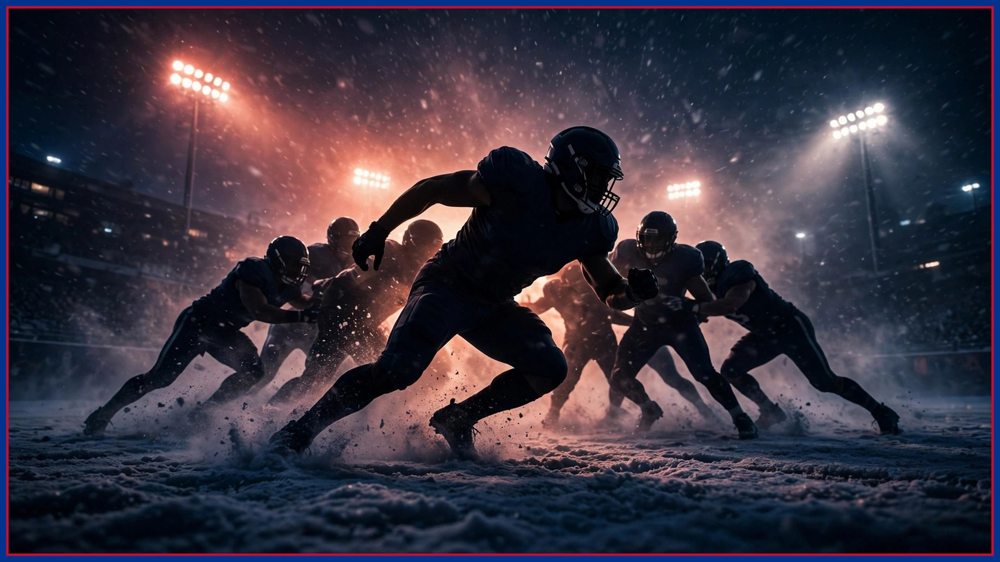

Ed Oliver went full. Spencer Brown and Dee Alford went the other way.
Ed Oliver went from limited Wednesday to a full participant Thursday — the best news of Ravens week. But Spencer Brown missed a second straight practice and Dee Alford was downgraded to out, and Friday's final designations now decide Buffalo's edges.

Thursday was supposed to be the day Buffalo's injury picture finally cleared up. Instead it split in two. Ed Oliver — out the past two games with a knee injury — was a full participant in Thursday's practice, per the Bills' Thursday report reported by Buffalo Rumblings, after being limited on Wednesday. That is the single best development of Ravens week. And on the same report, the two names Buffalo could least afford to lose ground did exactly that: right tackle Spencer Brown missed practice for a second straight day with a back injury, and slot corner Dee Alford was downgraded from limited on Wednesday to a non-participant on Thursday with an ankle injury. Final game designations arrive Friday, and inactives land Sunday before the 1 PM ET kickoff against Baltimore at Highmark Stadium — but Thursday just told us where Friday's drama lives.
Start with Oliver, because everything about defending Baltimore starts in the middle. Oliver has missed Buffalo's last two games, and his absence has been the quiet hole in a defense that ranks 31st in yards allowed. A limited Wednesday was a step. A full Thursday is a different sentence entirely — it is what a player on track to play looks like in a normal week. Nothing is official until Friday's designations and Sunday's inactives, and this desk will not upgrade a practice report into a guarantee. But a defensive tackle going limited-to-full in 24 hours, after two games out, is trending exactly the way Buffalo needed him to trend with Derrick Henry and a returning Lamar Jackson coming to town.
Now the other edge of the line. Brown's back injury dates to the Oct. 12 game against the Los Angeles Rams, when he left in the second quarter. He returned six days later and played every snap against Las Vegas — and explained this week, in the quote of the week, what that took: 'I took enough drugs to sedate a small elephant in LA,' Brown said Wednesday, per the Democrat and Chronicle's reporting. He has not practiced since the bye — did not practice Wednesday, did not practice Thursday. Brown has said he remains optimistic and that head coach Joe Brady trusts his read on his own body, per Bills Wire — veterans earn that kind of leeway, and a Friday return in any capacity would change this conversation fast. If he cannot go, backup Tylan Grable is the likely starter at right tackle, per Bills reporting syndicated by Yardbarker. Against Baltimore's front, that is not a footnote. That is the matchup.
Alford's downgrade might be the sneakiest problem on the report. His ankle injury is not new — he first suffered it Oct. 4 against New England and missed the Rams game — and he played 43 of 66 defensive snaps in the win over Las Vegas, per the Bills on SI reporting. Limited Wednesday, out Thursday is the pattern that suggests a setback in practice, and Buffalo's depth behind him is thin: backup nickel Jordan Hancock remains on injured reserve, per that same reporting. Layer that on top of a secondary already playing Sunday without C.J. Gardner-Johnson, whose one-game suspension was upheld on appeal — he is out for the Ravens game and eligible to return Nov. 2 — and Jim Leonhard's coverage plan gets very honest, very quickly, against Jackson and Baltimore's receivers.
The rest of Thursday's Bills report was steadier. Wide receiver DJ Moore was limited for a second straight day as he works back from his shoulder injury after missing the past two games — two straight days of practice is encouraging, but his status for Sunday remains unconfirmed until Friday's designations. Tight end Dalton Kincaid (chest) and outside linebacker Bradley Chubb (chest/thumb) were also limited Thursday, per the report. Running back Ray Davis did not practice Thursday due to illness. None of those names moved backward on Thursday. Brown and Alford did — and in a week this big, movement is the story.
Baltimore's Thursday report moved the other way, and honesty requires saying so. Lamar Jackson was a full participant Thursday for a second straight day — his first full practices since Oct. 2 after missing three straight games with a high ankle sprain, per the Ravens' reports. Linebacker Roquan Smith and safety Kyle Hamilton both returned to practice Thursday as limited participants after missing Wednesday, per Ravens reporting. Even rookie guard Vega Ioane was back as a limited participant Thursday, just four days after an MCL sprain that was initially expected to cost him time. Baltimore is getting healthier on schedule. Buffalo is getting healthier in the middle — and thinner on the edges.
So Friday is the day. The final practice, the official questionable / doubtful / out designations, and the last real information before Sunday's inactives at Highmark. If Brown gets on the field Friday in any capacity and Alford returns, Thursday becomes a scare, not a verdict. If they miss a third day, Buffalo spends the weekend building contingency plans at right tackle and nickel corner for the biggest home game of the season so far. Oliver going full says the heart of this defense is coming back. Brown and Alford say the edges still have to be earned. Check back here Friday afternoon when the designations drop — that report, not this one, writes Sunday's starting lineup. Go Bills.
The BNC Blitz is free: the day's Bills news, one stat that matters, and one take, every morning. Join to keep reading — and never miss the end of a story again.